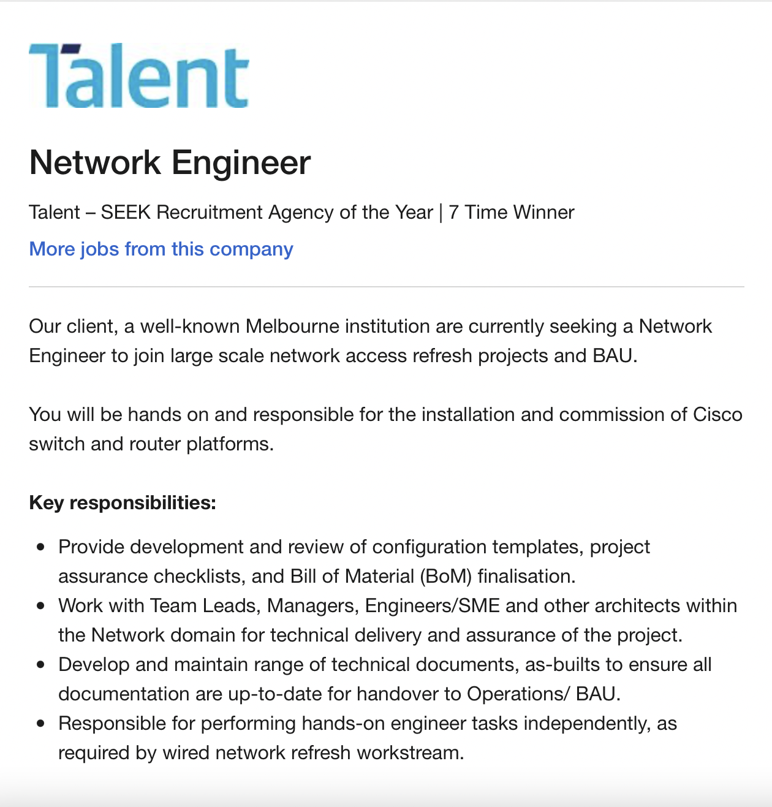

My Profile
Andy Lu
Personal Information
Background Information
My mother and father come from Vietnam and they both speak Vietnamese and Cantonese, as do I however I am not very fluent in any of those languages. I have just recently graduated high school and I am currently studying my first year of Bachelor of IT at RMIT University. During my spare time, I enjoy playing games with my friends. I recently started playing Genshin Impact which is an action role-playing game. I also recently got back into Valorant which is a 5v5 FPS game. In the past, I played games like Dota 2 and CSGO.
Interest in IT
What is your interest in IT? When did your interest in IT start? Was there a particular event or person that sparked your interest?
Ever since I was young I had always had an interest in IT. It was something that I grew up around. My cousins were the ones who inspired and introduced me to computers and IT in general. Where I used to watch my cousins play CS: Source and Dota on their computers and get to play with them occasionally as well as watch them build and work on their websites. I eventually gained an interest in PCs in 2017 where I would eventually buy and build my own. 2017 was also the year where my knowledge of IT and computers grew most and was also the year that I decided that I wanted to pursue a career in IT when I was older. Although my cousins were the ones who inspired and introduced me to IT they weren’t the ones who sparked my interest in IT, it was UNI, the first few weeks of my course was where I found myself genuinely drawn and interested, whether it was learning Python for the first time or improving my HTML skills all of these events led me to enjoy IT even more. So if I was asked what particular event sparked my interest in IT my answer would be my first few weeks of UNI.Outline your IT experience
Before starting UNI I had a little bit of experience in HTML from high school where I had taken an Introduction to Computing class, besides that, I didn’t have any experience. However, since I started UNI I recently started to learn Python and as well as learn more HTML.Why did you choose to come to RMIT? What do you expect to learn during your studies?
At first, I had decided to choose RMIT because of its location, however, I wanted to be sure that RMIT was the university that I wanted to attend so I did more research and found that it was ranked highly as a university for IT as well as being a University that offered a wide range of facilities and equipment as well as highly qualified staff that would be there whenever I needed. Furthermore, I had many recommendations to go to RMIT from my cousins as they also attended RMIT where they vouched that it was an extremely good university for experiences and professionalism.Ideal Job
A description (in your own words) of the position, and particularly what makes this position appealing to you.
The role of a Network Engineer primarily revolves around the management of an organization's computer networks as well as the setup and development of those networks. Furthermore, Networks Engineers will also provide assistance to employees as well as clientele of the business if a problem arises. In relation to solving problems that may arise in the future, Network Engineers will continuously monitor the networks and resolve problems in areas such as a business’s VPN/NETWORK, and resolve issues that may arise from the firewall logs.A description (in your own words) of the skills, qualifications and experience required for the position.
The skills that I believe are required to a Network Engineer include the ability to keep up to date with an organization's technical needs and industry demands, exceptional communication skills that will allow the individual to communicate effectively with untrained staff, the ability to be able to take on various tasks and pay attention to detail, excellent analytical and problem-solving abilities and the ability to work in teams as well as with clients of the organization. Furthermore, the qualifications and experience needed to become a Network Engineer would include the following, experience as a Network Engineer at a company, relevant certifications such as ‘Cisco Certified Network Associate’ or ‘Cisco Certified Network Professional’ and a Bachelor degree in Information Technology.A description (in your own words) of the skills, qualifications and experience you currently have.
As of now I currently believe that I have the ability to take on various tasks and pay close attention to all of them, and the ability to communicate and convey what I want to individuals who don’t have any experience within a particular field. Regarding qualifications and experience to become a Network Engineer I don't have any certifications or the experience however I plan to acquire the skills and qualifications necessary to pursue my career choice.A plan describing how you will obtain the skills, qualifications and experience required for the position, building on those you have now. This need not be greatly detailed, (and will probably change significantly over time anyway), but try to be as specific as you can.
The ways I plan on obtaining the necessary certifications to pursue my career goal is to take part in ‘Cisco Certified Network Associate’ course as well as enroll in a ‘Cisco Certified Network Professional’ course to further develop the necessary skills needed to become a Network Engineer and establish a strong foundation on Networking. I also intend to acquire work experience by applying for a Junior Network Engineer position after the completion of my Bachelor. To develop my skills I plan to attend Networking events and speak to professionals in the field asking for advice which will help greatly in improving my communication skills, as well as my knowledge in the field.Personal Profile
Myers - Briggs Test Results

Online Learning Test Results
The Five Big Personality Test Results
What do the results of these tests mean for you?.
In relation to the ‘Myers - Briggs test’, I find the results to be accurate and detailed out of the three tests. I believe that the test not only portrays how an individual acts when they encounter problems but also how they act and hold themselves within society itself, as a person who isn't very emotional and who is mostly independent I find the results of the test true to my character. Moreover, I find the results from the ‘Online Learning Test’ to be extremely limited and inefficient as It only applies to specific groups of individuals, for example, the question ‘What kind of books do you like to read for fun?’ as a person who doesn’t read books I tend to watch videos instead. However, I do find the test to be beneficial from an educational standpoint especially to teachers who wish to adapt and change their teaching style to accommodate students within their class. I believe that the results from the ‘Five Big Personality Test’ are accurate but I believe that it can be improved as some of the questions asked are dependent on a person and not applicable to them. For example, the results of this test show that I am an extrovert however I am the complete opposite of this.How do you think these results may influence your behaviour in a team?
In terms of how these results may reflect in the team, I believe that there are pros and cons, pros being that it may help the team to be more productive if there are individuals who are independent as they can take the initiative in completing the set tasks. However, the cons being, individuals who rely mostly on their skills may lack in communicating with their team members which may be counterproductive instead.How should you take this into account when forming a team
I believe that results from these types of tests can be used to help form a team and that it would help boost a team’s productivity if teams were grouped together based on their personalities and learning styles. However, I doubt the effectiveness of doing this as it may result in conflict within the team if multiple personalities are being grouped together.Project Idea
Overview of Project
I plan on developing a ‘Calorie Tracker’ app that will allow users to efficiently track the amount of calories that they eat. The application will offer users a clean easy to navigate design, Furthermore, the application will allow users to scan the barcode of items, where the system will then automatically add the item to the foods that they have eaten for the day along with a summary of the amount of calories an individual has consumed, their protein intake, carbohydrates intake as well as their fat intake.Motivation for Project
My motivation for designing a ‘Calorie Tracker’ app is to allow individuals like myself who wish to keep count of their daily intake a quick and efficient way to do so, especially with the option of scanning the barcode of the item. As an individual who keeps track of my daily intake I tend to write down what I eat in a day on my phone, which can be at times annoying. This app will be useful for individuals who do track their calorie intake and want a method which is quick and easy. Nowadays, most calorie counting apps make customers enter the dietary information of the item manually which is extremely tedious.Description of Features and Services
The ‘Calorie Tracker’ app significantly aids users who wish to lose weight, build muscle as well as become more fit, through an easy and efficient system that allows users to track what they are eating in a day.General Information
Nutrition and Dieting
Support and Help
Design
Community and Friends
Tools and Technologies
The software I intend to use to build my application include MIT App Inventor which is a development environment that can be used to create applications for Android. Furthermore, another software that I intend to use for the creation of my application would be AppCode which supports several languages that i am familiar with such as CSS, HTML and Python. Furthermore, cross platform app developments such as ‘React Native’ that will allow the application to launch on IOS, Android and WIndows. Other hardware that is necessary for the development of this application would be a personal computer/ laptop to work on the application. Additionally, users who can test out the application and provide feedback would be extremely helpful in building a design that is efficient and quick.Skills Required
In relation to the skill set required for this project project it includes the knowledge and understanding of programming languages such as Python, HTML, and CSS that will be used to develop the application. Moreover, other important skills that are necessary include experience with cross-platform app development programs, excellent time management skills, as well as excellent analytical skills which will significantly help developers.Outcome of Project
If my project is successful it will become very beneficial for those who workout regularly, as well as those who intend to go on a diet where this app will help significantly in counting calories in a quick and efficient manner. Additionally, this app will erase the need to write down your daily intake including protein, carbohydrates, fats and total calories completely, allowing users to scan the barcode of food items saving time. Although there are many other calorie counting apps there are extremely limited apps that allow for users to scan the barcode of items some of the apps that do allow this have a limited food library. The development of this app will evolve calorie counting apps as a whole offering a large food library for users to scan food items.